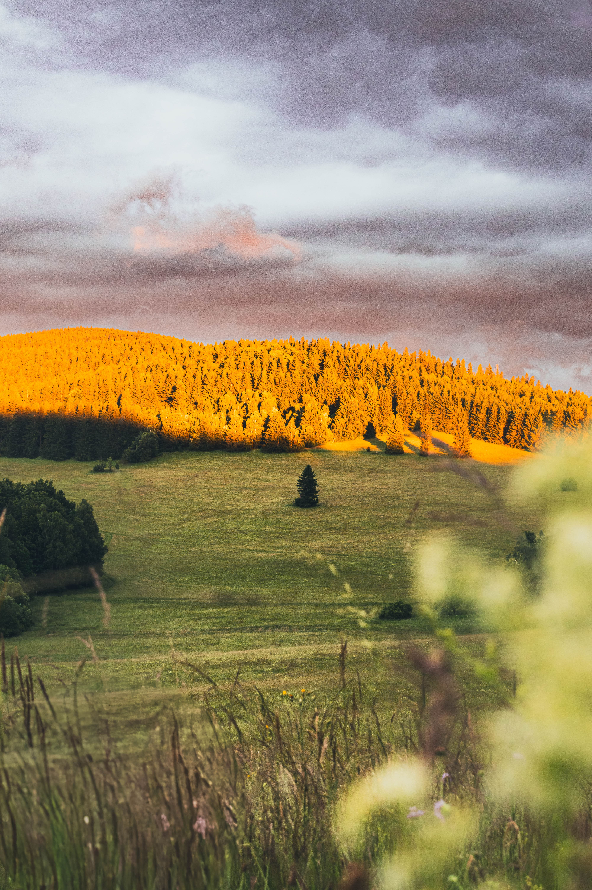

Cesty za obzorem
Lesy voní, lomy lákají ke koupání a svět tam venku je najednou daleko
Kde se zastavil čas
Rychlebské hory jsou syrové, zatím neobjevené davy turistů a mají svou nezaměnitelnou melancholickou náladu. Je to kraj, kde se nespěchá, kde ticho léčí a kde každý krok lesem odhaluje kousek zapomenuté historie. Nechte se vést intuicí nebo využijte naše ověřené tipy na místa, která nám přirostla k srdci. Od křišťálových lomů po secesní perlu ukrytou v hlubokém údolí.
Zatopené lomy
Místní lomy mají svou nezaměnitelnou, lehce drsnou atmosféru. K lomu Vycpálek nebo Rampa to máte od postele jen kousek. Stačí si ráno hodit ručník přes rameno a za pár minut se koupete v křišťálové vodě uprostřed lesů.


Zaniklé vesnice
Minulost Rychleb je trochu melancholická. Při toulkách po místech, kde dříve stávaly horské osady, dnes najdete jen staré ovocné stromy uprostřed hlubokého lesa nebo zbytky kamenných zídek, které pomalu pohlcuje mech.
Boží hora
Dominanta nad Žulovou, kde se na žulovém vrcholu tyčí novogotický kostel. Výšlap nahoru vás odmění klidem a jedním z nejhezčích výhledů na hlavní hřeben Rychlebských hor. Ideální místo pro rozjímání při západu slunce.


Tančírna v Račím údolí
Dřevěná secesní budova s barevnými vitrážemi, která stojí úplně sama hluboko v lese. Zní to jako výjev z filmu, ale zrekonstruovaná Tančírna je reálný architektonický skvost. Ideální cíl pro odpolední procházku a kávu.
Jedu za dobrodružstvím